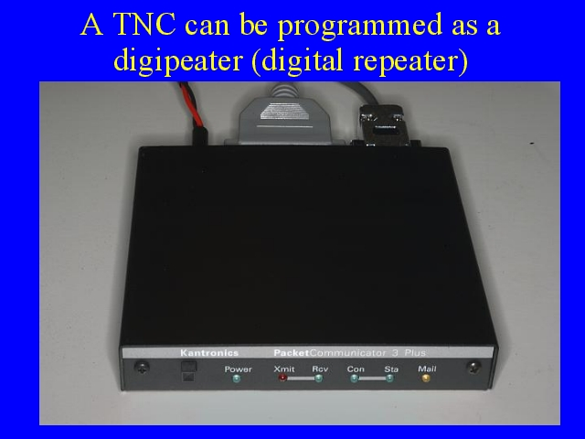

Notes:
A TNC can be programmed to only receive packets, decode them, and pass them on to an attached computer, or it can be programmed to decode packets and retransmit them as a digital repeater. The repeated packet will have the callsign of the digipeater attached to it as well as the call sign of the station that originated the packet. In enable a network of digipeaters to retransmit packets but not endlessly retransmit them several protcols have been developed and tested. The currently advocated proposal involves trackers transmitting packets to a path of WIDE2-2.